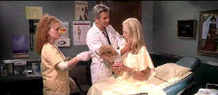

| Dr. T and the
Women (SE)/C,A- |
| Artisan/2000/122/ANA
2.35 |
Getting
through Dr. T and the Women is like paying a visit an emergency room; you can't wait to get out of
there but you wait and wait. Robert Altman films are often so filled with characters and plot lines
with overlapping dialogue that when they miss the mark it's just as chaotic as an emergency room
too. I can’t say I was disappointed
because I did not expect too much. It’s a comedy, but it rarely brought a smile to my face. Yes,
it had a few moments, but some of the action was simply pathetic.
 |
| Dr. T plies his trade. ©Artisan |
Between Dr. T's nut case wife, the needy patients who can't wait for the next visit to his office,
the impending marriage of his daughter, the surprise discovery of her college best friend and the
new gold pro, Dr. T is about to go off the waiting room charts.
The film
ends in a wild ride through a storm that lands Dr. T someplace between Oz and Luis Buñuel. It's
just one more unsatisfying moment for me in a film that failed to seduce this viewer with any of
the supposed sexual potion that Dr. T managed to entrance his women with.
Richard Gere plays a GYN like a
male worker bee in a nest of buzzing ladies. Sometimes the overlapping dialogue of Altman was
simply a headache. Oh yes, the ever present Helen Hunt plays the love interest for Dr. T. She's a
golf pro who doesn't look well enough to swing a club much less hoist a bag on her shoulder. Well,
maybe she could get Gere to caddy for her. I personally don't get the Helen Hunt phenomenon: a whole lot of people out there must see something in
her that I am totally missing. Farah Fawcett finds out what a bathing mall is all about as Dr. T's
wife.
Dr. T and the Women is a bore. Bring lots of magazines if you want
to pay a visit to this waiting room of a movie. Altman’s is afloat in a see of would-be comic waters except he’s certainly out of
synch
with my sense of humor. The most popular GYN is Texas simply doesn’t make it for me and in fact,
I found much more pathos in the film than was meant to be.
Well, at least the DVD looks real good. You won't miss a detail of the
production. It's sharp from end to end and top to bottom. There's no edge enhancement. Colors are
accurate. The mall scenes pack plenty of pizzazz and overall light output is excellent. Interior
and exterior light levels are nicely balanced. Skin tones are captured in a wide and natural range.
There are no noticeable artifacts to disturb the overall cleanliness of the DVD. The dialogue and
musical is presented with clarity in Dolby Digital 5:1.
Presented as a special edition, you'll get a better understanding of what Altman
and company had in mind if you listen to the audio commentary. There's also a video interview with
Altman, a featurette, and production notes.
|
|
|
|

Selections from the Feature Archive
include articles on Akira Kurosawa, Frank
Darabont, Blonde Bimbos, Hollywood Street Gangs, or Vietnam: The
Hollywood Pariah, and many more....
Puttin on the
Ritz

Fred Astaire and Cyd Charisse bring Silk Stockings to life, a remake of Ninotchka, one of many
films successfully turned into musicals by the Hollywood dream factory. Read all about remakes into
musicals by clicking on the divine dancers.

The
Movie Poster Archive includes extensive poster images from the films of stars like Susan Hayward,
Kirk Douglas, Katharine Hepburn and many more. Our featured star is Doris Day.
 
The National Film Preservation Foundation (NFPF) is the nonprofit organization created by the U.S. Congress to save
America's film heritage.

An on-line Home Theater magazine with excellent hardware reviews,
including thorough and responsible research. Check it out.

European film portal and hard to find video store.
 Kinoeye Archive Kinoeye Archive
This is a resource of all content-rich
materials on the web relating to Central and East European cinema. The ultimate aim of the Kinoeye
Archive is to provide a near-as-damn-it definitive index of intelligent and thoughtful
English-language analysis of Central and Eastern European cinema on the web.
|